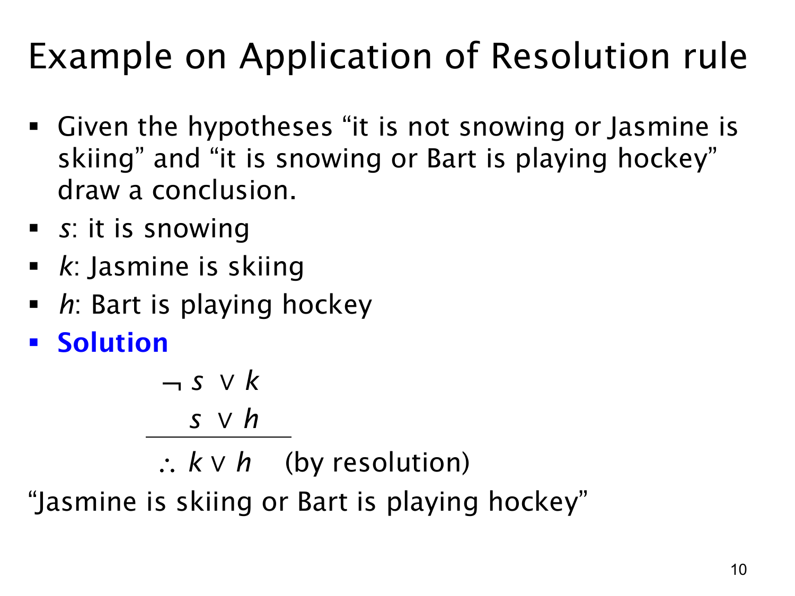

L1.3 · 第 10 页讲解原文
查看这一页课件

归结规则应用：雪、滑雪与冰球
本页把两句自然语言前提转成命题，练习直接使用归结规则。令 s 表示“正在下雪”，k 表示“Jasmine 在滑雪”，h 表示“Bart 在打冰球”。两句前提分别是
¬s∨k,s∨h.
第一句说“没有下雪或 Jasmine 在滑雪”；第二句说“下雪或 Bart 在打冰球”。其中 ¬s 与 s 是互补文字，可按归结规则从这两条析取式推出
k∨h.
即：Jasmine 在滑雪，或 Bart 在打冰球。 这个“或”允许两件事都发生，并没有断言只有其中一人运动。
也可按天气分情况验证。若 s 真，第一句的 ¬s 假，为使前提真，必须有 k 真；若 s 假，第二句的 s 假，为使前提真，必须有 h 真。两种可能都让 k∨h 真。因此无须先确定实际上是否下雪，仍能得到这个析取结论。
本例展示使用规则的三个步骤：给基本陈述命名，把自然语言准确写成“或”式，找出两条前提中的互补文字并消去。不能从这些前提进一步单独断言 k 或单独断言 h，因为另一种天气情况可能只保证其中另一项。